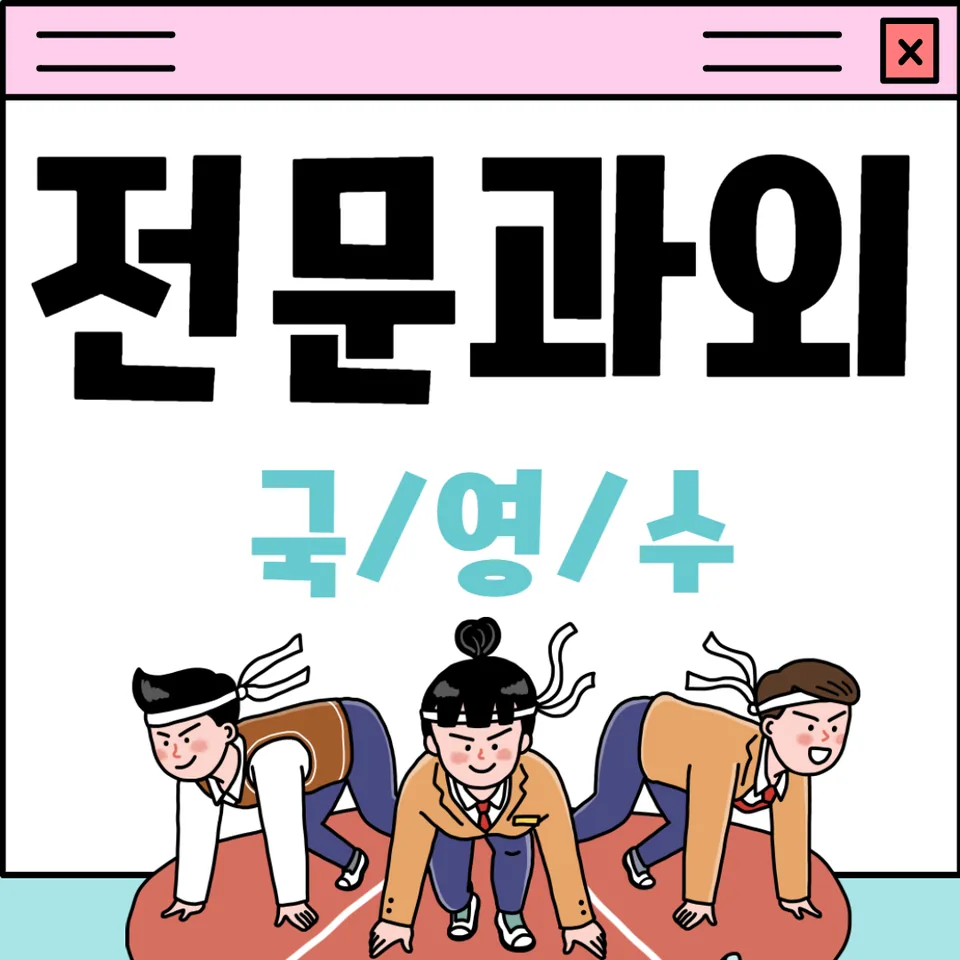

PageType : SUBJECT
URL : /경기도과외/안양시과외/만안구과외/박달동과외/박달동수학과외/
지역 교육환경이 수학 학습에 미치는 영향
박달동수학과외를 찾는 학생들은 학교 수업의 속도와 방과후 학습의 밀도가 함께 작동하는 환경을 자주 마주합니다. 같은 단원이라도 수업 중 이해가 끝까지 이어지지 않으면, 이후 진도에서는 빈칸이 눈에 띄게 커집니다. 그래서 박달동수학과외에서는 “지금 막힌 지점”을 빨리 드러내는 관찰 방식이 중요해집니다. 학생이 어느 순간부터 문제를 회피하는지, 계산보다 사고가 필요한 단계에서 멈추는지 등을 체크하며 학습 리듬을 맞춥니다.
학습 분위기는 대체로 시험 전 집중과 평소 유지의 균형으로 형성됩니다. 박달동수학과외에서는 시험 직전의 몰입이 생기는 이유를 분석하되, 그 몰입이 다음에도 지속되도록 공부습관의 틀을 먼저 다듬습니다. 지역 학생들은 숙제량이나 학교 과제의 누적에 따라 “마감형 공부”에 익숙해질 수 있는데, 이 흐름이 반복되면 개념이 남아 있는 채로 문제풀이만 늘어나는 경향이 생깭니다. 박달동수학과외는 공부습관이 흔들리지 않게 주간 단위 복습 루틴을 함께 설계합니다.
학교별 평가 방식과 학습 방향
학교마다 내신 구성과 수행평가의 비중이 달라서, 같은 문제를 풀어도 접근이 달라집니다. 박달동수학과외에서는 내신에 가까운 유형은 “과정에서의 실수”가 자주 나타나는지, 수행평가에서는 “설명과 정리”가 약한지 분리해 확인합니다. 학생이 답만 맞히는 데 급급할 때는 채점 기준을 체감하지 못해 학습 방향이 비틀릴 수 있습니다. 그래서 박달동수학과외에서는 평가 방식에 맞춰 학습 중점이 바뀌는 시점을 잡아 줍니다.
또한 시험은 제한 시간 안에 사고를 끌어내는 능력을 요구하지만, 학교 현장은 수업 시간 안 이해를 넘어 “다음 행동”을 정리하는 훈련이 부족한 경우가 있습니다. 박달동수학과외는 개념을 이해하고 활용하는 단계에서, 학생이 문제 해결 과정을 스스로 다시 말해 볼 수 있게 돕습니다. 이 과정은 정답을 외우는 공부와 달리, 시험 당일에도 사고 흐름이 이어지는 기반이 됩니다.
학생들이 수학을 어려워하는 주요 원인
학생이 수학을 어려워하는 시기는 대체로 ‘개념이 단어처럼 느껴질 때’와 ‘연결이 끊길 때’에 동시에 나타납니다. 박달동수학과외에서는 처음 막히는 이유가 계산 실력 부족인지, 개념 간 연결 부족인지부터 구분합니다. 같은 유형의 오답이라도 원인이 다르면 처방도 달라지기 때문입니다. 특히 단원 초반의 이해가 약하면, 중후반 문제에서 필요한 사고력이 점점 요구량을 늘리며 불안을 키웁니다.
학습 과정에서 반복되는 오답은 대부분 “분석 없이 다음 문제로 넘어가는 습관”에서 시작됩니다. 박달동수학과외에서는 틀린 문제를 다시 풀어보며 실수의 성격을 분류합니다. 예를 들면 읽기에서 놓친 요소인지, 조건을 해석하지 못한 것인지, 중간 단계의 정리가 생략된 것인지 확인합니다. 이 점검이 쌓이면, 학생은 수학이 어렵다는 감정 대신 문제 해결의 패턴을 학습하며 자신감을 회복합니다. 더불어 학부모가 보기에 “왜 자꾸 같은 실수를 반복하는지”가 명확해져 교육 고민도 구체적인 대화로 바뀝니다.
학년 변화에 따른 수학 학습의 차이
학년이 올라갈수록 부담은 늘지만, 그 부담의 성격은 동일하지 않습니다. 박달동수학과외에서는 학년 변화에 따라 무엇이 달라지는지부터 정리합니다. 중간 단계에서는 풀이의 속도가 문제였다면, 이후에는 조건 해석과 개념 연결이 더 중요해집니다. 그래서 학습 계획도 단순히 양을 늘리는 방식보다, 복습과 개념 확인의 순서를 바꾸는 쪽으로 구성됩니다.
또한 자기주도학습의 필요성이 커지면서, 학생이 스스로 목표를 정하지 못하면 같은 시간 공부해도 결과가 흔들립니다. 박달동수학과외에서는 시험 기간 학습 패턴이 바뀌는 시점에 맞춰 계획적인 공부습관을 점검합니다. 계획이 실제 행동으로 연결되는지, 시간 효율을 확보하는 방식이 개인별로 다른지 확인하고 조정합니다. 그 과정에서 학생은 단순한 과제 완료가 아니라, 사고력이 성장하는 공부 흐름을 체감하게 됩니다.
꾸준한 학습이 실력으로 이어지는 과정
꾸준한 학습은 ‘매일 더 많이’가 아니라 ‘정해진 방식으로 반복’될 때 실력으로 이어집니다. 박달동수학과외는 복습이 학습 성과로 연결되는 이유를 학생이 경험하도록 만듭니다. 같은 단원을 다시 보더라도, 학생이 어떤 개념에서 자주 흔들리는지 이미 알고 있기 때문에 복습 시간은 빠르게 효율을 회수합니다. 이때 복습은 단순 재확인이 아니라, 오답을 근거로 한 재구성이 됩니다.
학습이 안정되면 문제 해결력도 서서히 확장됩니다. 처음에는 유형을 따라가는 수준에서 시작하더라도, 오답 분석과 반복이 쌓이면 학생은 선택지의 함정을 읽고 조건을 정교하게 다루는 방식으로 성장합니다. 박달동수학과외에서 강조하는 공부습관은 시험이 끝난 뒤에도 무너지지 않는 루틴입니다. 그래서 학생은 학교와 가정에서 이어지는 학습 환경 속에서 스스로 공부를 관리하는 힘을 만들어 갑니다.
문제 해결력을 키우는 학습 습관
문제 해결은 공식 암기가 아니라, 상황을 파악하는 습관에서 시작됩니다. 박달동수학과외에서는 문제를 보기 시작한 순간부터 “무엇을 묻는지, 어떤 정보가 필요한지”를 학생 언어로 정리하게 합니다. 이 과정이 반복되면, 답을 빨리 찾으려는 급함이 줄어들고 사고력의 흐름이 단단해집니다. 학생은 풀이의 빈칸이 어디서 생겼는지 스스로 발견하며, 문제 해결 과정에 대한 통제감을 얻습니다.
또한 학습 과정에서 확인되는 변화는 학교 수업에서도 나타납니다. 같은 내용을 배우고도 이해가 느린 학생은 수업 중 필기만 늘리거나, 집에 와서 다시 찾는 데 시간을 소모합니다. 박달동수학과외는 시간 효율을 해치지 않는 방식으로 복습의 기준을 잡아 주며, 자기주도학습이 자리 잡도록 돕습니다. 그 결과 학생은 시험 기간에도 학습 패턴이 흔들리지 않고, 꾸준히 사고력을 확장하는 방향으로 공부합니다.
복습과 학습 관리가 중요한 이유
복습은 ‘늦게 몰아서’가 아니라 ‘필요할 때 즉시’가 효과적입니다. 박달동수학과외는 단원이 끝난 뒤만 기다리지 않고, 시험 전까지 반복해야 할 지점을 체크합니다. 학생이 어려움을 느끼는 학습 시점은 대체로 복습이 빠진 구간에서 집중됩니다. 그래서 오답이 발생하면 그 오답이 연결되는 개념을 함께 되짚고, 같은 실수를 줄이는 방향으로 학습 관리를 진행합니다.
학부모가 자주 느끼는 교육 고민은 성적이 아니라 “공부한 만큼 왜 결과가 안 나오지?”에 가깝습니다. 박달동수학과외에서는 집에서의 복습 방식이 왜 흔들리는지, 어떤 단계에서 학습이 멈추는지 기록으로 확인합니다. 학교 과제와 내신 대비가 겹치는 시기에도 부담이 관리되도록 학습 계획을 조정하며, 학생은 복습을 부담으로 느끼기보다 실력으로 이어지는 과정으로 받아들이게 됩니다.
수학 학습에서 확인해야 할 핵심 요소
수학 학습의 핵심은 개념 이해와 문제 해결, 그리고 관리의 세 축이 연결될 때 드러납니다. 박달동수학과외에서는 학생이 단순 암기에서 벗어나 개념을 활용하는 경험을 쌓도록 돕고, 오답을 줄이는 반복 구조를 만들며, 복습이 자연스럽게 학습 관리로 자리 잡게 합니다. 이 네트워크가 형성되면 공부습관이 안정되고, 시험 기간에도 불안이 줄어듭니다.
- 학교 수업과 시험 범위에 맞는 학습 계획을 세우고 있는지 확인합니다.
- 개념을 암기하는 데 그치지 않고 문제 해결 과정에 활용하고 있는지 점검합니다.
- 틀린 문제를 다시 풀어보며 실수의 원인을 꾸준히 분석합니다.
- 단기 성과보다 지속적인 복습과 학습 습관을 유지하고 있는지 살펴봅니다.
자주 묻는 질문
박달동수학과외를 시작하기에 가장 좋은 시기는 언제일까요?
단원이 바뀌기 전후로 흔들림이 보이면 조기 조정이 유리합니다. 특히 개념 이해가 끊기는 순간을 확인한 뒤 학습 계획을 정리하면, 이후 시험 준비가 한 방향으로 이어집니다.
내신과 수행평가는 어떻게 함께 준비해야 하나요?
내신은 문제 해결의 과정이 중요한 경우가 많고, 수행평가는 설명과 정리가 포함될 수 있습니다. 박달동수학과외에서는 학교 평가 흐름에 맞춰 연습의 초점을 다르게 배치해 준비 부담을 균형 있게 만듭니다.
기본 개념이 약한 학생도 따라갈 수 있나요?
가능합니다. 핵심은 부족한 부분을 “더 많이 풀기”로 메우는 것이 아니라, 개념을 활용하는 최소 단계를 먼저 회복하고 연결을 다시 만드는 것입니다.
오답을 줄이려면 어떤 학습 태도가 필요할까요?
정답 확인 후 끝내지 않고, 실수가 생긴 원인을 분류해 다음 풀이에서 행동을 바꾸는 태도가 필요합니다. 복습은 같은 유형을 반복하기보다 원인을 다시 다루는 방식으로 진행될 때 효과가 큽니다.
자기주도학습은 어떤 순서로 자리 잡나요?
먼저 계획의 기준이 잡혀야 합니다. 박달동수학과외에서는 시간 효율을 고려해 주간 루틴을 만들고, 개념 점검과 복습, 문제 해결 연습이 서로 연결되도록 관리합니다.
